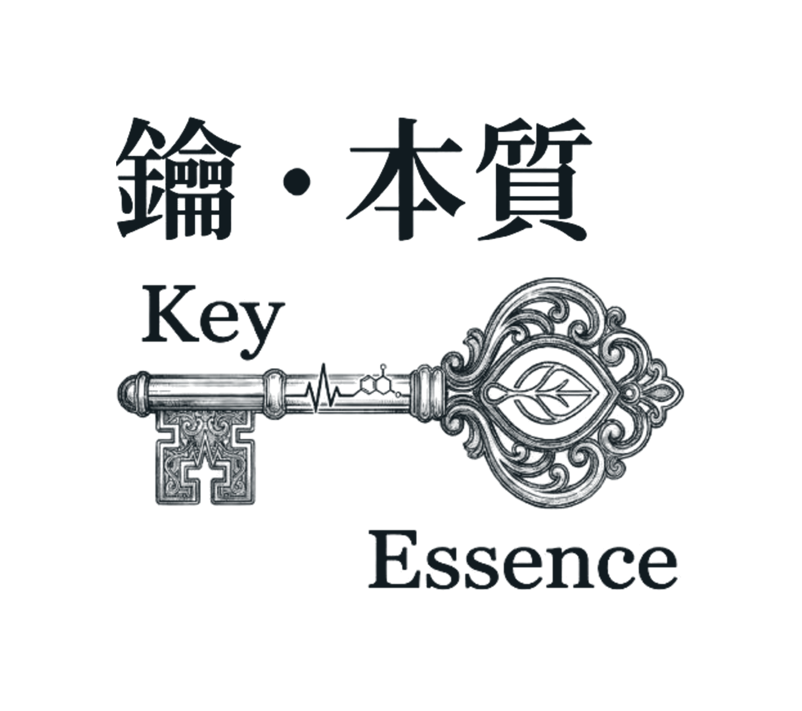

九大中心狀態掃描
最近，
哪裡最累？
9 個生活小情境，看看最近哪一個能量中心
最需要照顧，再找一支陪你的精油。
沒有對錯，選最像你最近的那一個就好。

9 個生活小情境，看看最近哪一個能量中心
最需要照顧，再找一支陪你的精油。
沒有對錯，選最像你最近的那一個就好。
沒有對錯，選最像你最近的那一個
也可以選：
家裡有其中一支就可以，聞聞看，選你最喜歡的那個味道。
你的在人類圖上是空白，還是有定義？
按下去會打開鑰．本質的官方 LINE，並帶入你的結果，傳出後就會收到延伸解讀。
傳到官方 LINE 看延伸解讀到官方 LINE 留下你的西元出生年月日、出生時間（越準越好）、出生地，Molly 會依你的人類圖，搭配這次測驗的結果，親自回覆你更完整的分析和精油建議。
你的出生資料只用來排盤和回覆你，只有 Molly 會看到，不會提供給其他人。
到官方 LINE 留下出生資料好的，謝謝你今天停下來看看自己。想再多了解的時候，隨時回來。